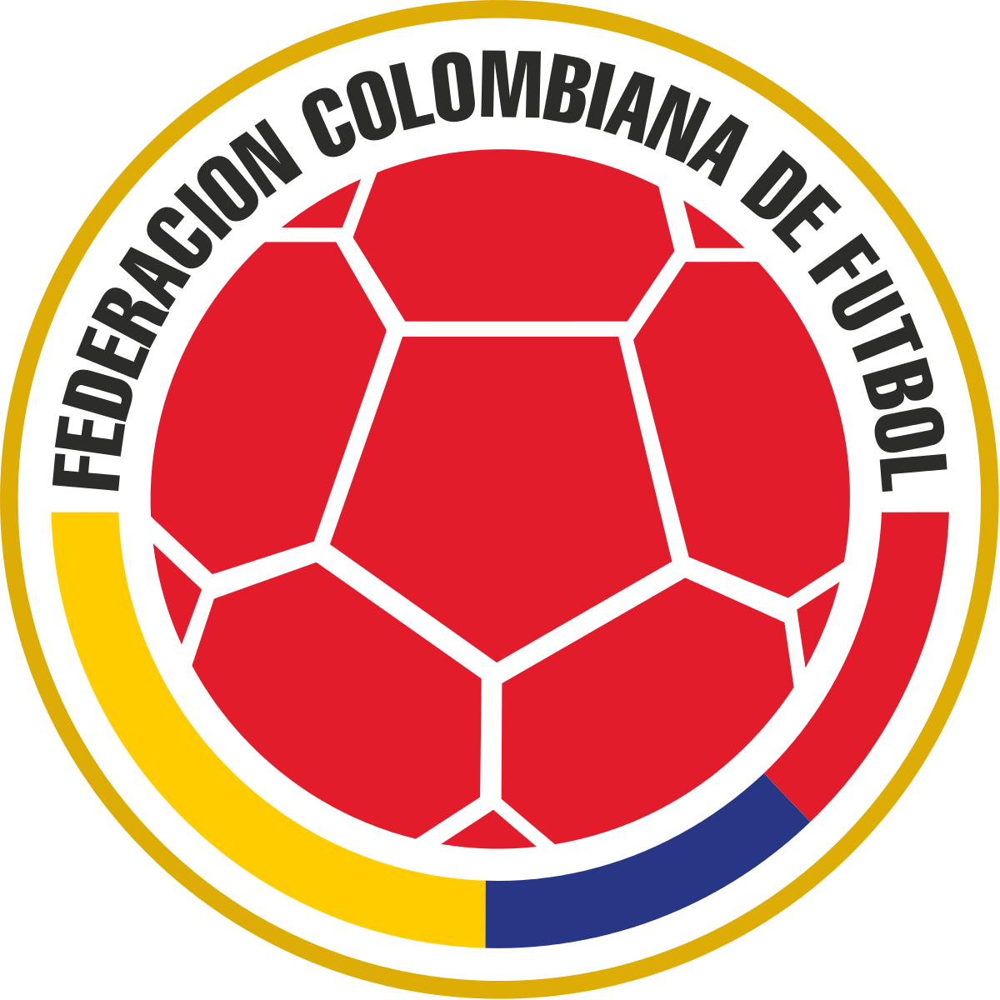

Neymar Jr
Neymar da Silva Santos Júnior, known as Neymar, is a Brazilian professional footballer who plays as a forward.

Lionel Messi
Lionel Andrés Messi is an Argentine professional footballer who plays as a forward and captains the Argentina national team.

Cristiano Ronaldo
Cristiano Ronaldo dos Santos Aveiro GOIH ComM is a Portuguese professional footballer who plays as a forward for Serie.

Paulo Dybala
Paulo Exequiel Dybala is an Argentine professional footballer who plays as a forward for Serie A club Juventus and the Argentina national team.

Mesut Ozil
Mesut Özil is a German professional footballer who plays as an attacking midfielder for Süper Lig club Fenerbahçe.

Mauro Icardi
Mauro Emanuel Icardi is an Argentine professional footballer who plays as a striker for Ligue 1 club Paris Saint-Germain.

Di Maria
Ángel Fabián Di María is an Argentine professional footballer who plays for Ligue 1 club Paris Saint-Germain and the Argentina national team.

Kylian Mbappé
Kylian Mbappé Lottin is a French professional footballer who plays as a forward for Ligue 1 club Paris Saint-Germain .

Mohamed Salah
Mohamed Salah Hamed Mahrous Ghaly is an Egyptian professional footballer who plays as a forward for Premier League club Liverpool.
Matchs
| POS | TEAM | P | GD | PTS | |
|---|---|---|---|---|---|
| 1 | Argentina | 5 | 0 | 15 | |
| 2 | Brazil | 3 | 0 | 10 | |
| 3 |  | Columbia | 2 | 0 | 7 |
Latest News
Jorginho has been a mainstay in the Chelsea team during the 2020/21 season, playing in 43 matches for the Blues. His goals and assists have contributed to the team's success, as well as his calmness and ability on the ball. Watch Jorginho wrap up the season from his view, including our incredible European victory and his excitement to get fans back. Jorginho has been a mainstay in the Chelsea team during the 2020/21 season, playing in 43 matches for the Blues. His goals and assists have contributed to the team's success, as well as his calmness and ability on the ball. Watch Jorginho wrap up the season from his view, including our incredible European victory and his excitement to get fans back.
Jorginho has been a mainstay in the Chelsea team during the 2020/21 season, playing in 43 matches for the Blues. His goals and assists have contributed to the team's success, as well as his calmness and ability on the ball. Watch Jorginho wrap up the season from his view, including our incredible European victory and his excitement to get fans back. Jorginho has been a mainstay in the Chelsea team during the 2020/21 season, playing in 43 matches for the Blues. His goals and assists have contributed to the team's success, as well as his calmness and ability on the ball. Watch Jorginho wrap up the season from his view, including our incredible European victory and his excitement to get fans back.

Jorginho has been a mainstay in the Chelsea team during the 2020/21 season, playing in 43 matches for the Blues. His goals and assists have contributed to the team's success, as well as his calmness and ability on the ball. Watch Jorginho wrap up the season from his view, including our incredible European victory and his excitement to get fans back. Jorginho has been a mainstay in the Chelsea team during the 2020/21 season, playing in 43 matches for the Blues. His goals and assists have contributed to the team's success, as well as his calmness and ability on the ball. Watch Jorginho wrap up the season from his view, including our incredible European victory and his excitement to get fans back.
Gallery